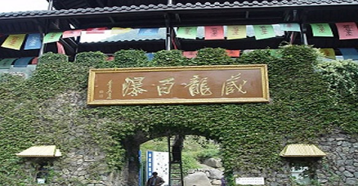

第三届中国旅游节;湖州国际生态（乡村）旅游节

活动主题
美丽乡村生态游 精彩快乐在湖州
时间地点
时 间：2011年4月24日至4月26日
地 点：浙江省湖州市安吉县
活动原则
精彩 快乐 创新 务实
主办、支持、承办、协办、责任单位
主办单位：国家旅游局、浙江省人民政府
支持单位：国家农业部、中国环境保护部、国家林业局、中国旅游协会
承办单位：浙江省旅游局、湖州市人民政府
协办单位：中国旅游报社、中国旅游协会休闲农业与乡村旅游分会、上海锦江旅游集团、上海旅游集散中心、浙江中旅集团、浙江中青国际旅游有限公司
责任单位：中共安吉县委、安吉县人民政府、湖州市旅游局
主要活动
（一）主体活动
1.第三届中国•湖州国际生态（乡村）旅游节开幕式
（1）时 间：4月25日上午9：00
（2）地 点：安吉县中南百草原景区
（3）参加对象：国家旅游局领导；国家农业部领导；中国环境保护部领导；国家林业局领导；浙江省政府领导；联合国世界旅游组织专家；中国旅游协会领导；中国旅游协会休闲农业与乡村旅游分会、农业部农村社会事业发展中心领导；浙江、上海和江苏等省市旅游局领导；浙江省有关部门领导；以中国长三角为主的生态旅游城市和地区旅游局领导；境外嘉宾代表；全国重点旅行社；以中国长三角为主的生态旅游城市和地区重点旅行社负责人；长三角乡村旅游联盟成员单位领导；湖州市领导；湖州市各县区领导；湖州市各有关部门领导；国家、省、长三角主要城市新闻媒体；安吉县机关部门、乡镇主要负责人。会议规模约400人。
（4）主要内容：湖州乡村民俗文艺演出；领导致辞；领导授牌；领导为风筝“点睛”；宣布“第三届中国•湖州国际生态（乡村）旅游节”开幕；江南“三月三”民间精品风筝大赛；领导参观乡村旅游建设成果展；嘉宾考察和体验湖州市、安吉县精品乡村旅游线路。
（5）承办单位：中共安吉县委、安吉县人民政府、湖州市旅游局
（6）活动场景：在开幕式会场及外围进行突出“诗画江南、山水浙江”，“清丽山水、生态湖州”，“优雅竹城、美丽乡村、风情小镇”环境宣传，并充分体现“低碳旅游、绿色旅游”的理念。
2.第三届中国•湖州国际生态（乡村）旅游节乡村旅游产品推介和旅游商品展销活动
（1）时 间：4月24日--4月26日
（2）地 点：安吉县中南百草原景区
（3）参加对象：全国重点旅行社；长三角重点旅行社；长三角乡村旅游联盟部分成员单位；湖州十大品牌乡村旅游景区；安吉县重点旅游企业；与会的其他旅游企业；新闻媒体。会议规模约150人。
（4）主要内容：4月24日-26日，乡村旅游建设成果展、旅游商品大型展销活动；4月25日，乡村旅游产品推介会。
（5）承办单位：中共安吉县委、安吉县人民政府、长三角乡村旅游联盟、湖州市旅游局
3.第三届中国•湖州国际生态（乡村）旅游节“美丽乡村”万人游活动
（1）时 间：4月25日--4月26日
（2）地 点：湖州市各县区
（3）参加对象：长三角范围游客、部分境外游客
（4）主要内容：重点推介和体验湖州市乡村旅游精品线路，举行“全国百强旅行社老总看湖州”乡村旅游体验游、美丽仙子乡村游、梦里水乡古镇游、生态城市风情游。
（5）承办单位：中共安吉县委、安吉县人民政府、湖州市旅游局、浙江省旅行社协会、上海锦江旅游集团、上海旅游集散中心、浙江中旅集团、浙江中青国际旅游有限公司、长三角乡村旅游联盟、长三角部分车友会。
（二）配套活动
1．安吉“美丽乡村嘉年华”活动
（1）时 间：4月25日--4月26日
（2）地 点：安吉县
（3）参加对象：长三角范围游客、部分境外游客
（4）承办单位：中共安吉县委、安吉县人民政府
（5）主要内容：黄浦江源探秘游、昌硕文化觅踪游、大竹海体验之旅、白茶故里采摘游、“激情田园风”主题篝火晚会、“低碳生活 美好世界”生态放生活动。
2. 魅力名城体验游活动
（1）时 间：4月25日--4月26日
（2）地 点：湖州市各县区
（3）参加对象：长三角范围游客、部分境外游客
（4）承办单位：湖州市旅游局、浙江省旅行社协会、上海锦江旅游集团、上海旅游集散中心、浙江中旅集团、浙江中青国际旅游有限公司
（5）主要内容：百名老外湖笔体验游、千名游客购丝绸乐湖州、湖州人游湖州、生态放生游活动。
3.名山湿地 踏青赏花游
（1）时 间：4月25日
（2）地 点：德清县莫干山风景区、下渚湖国家湿地公园
（3）参加对象：上海、杭州等周边市民
（4）承办单位：中共德清县委、德清县人民政府
（5）主要内容：启动暨颁奖仪式、千名沪杭市民德清踏春活动、第二届铜官庄乡村篝火啤酒节。
4.长兴陆羽茶文化体验游活动
（1）时 间：4月25日
（2）地 点：长兴县水口顾渚村、和平白茶街 （3）参加对象：湖州市民、长三角游客
（4）承办单位：中共长兴县委、长兴县人民政府
（5）主要内容：启动仪式、陆羽茶文化体验游。
5.吴兴生态（乡村）体验游活动
（1）时 间：4月25日
（2）地 点：移沿山生态农庄、织里中国童装城
（3）参加对象：长三角城市旅行社负责人、湖州市民、长三角游客。
（4）承办单位：中共吴兴区委、吴兴区人民政府
（5）主要内容：参观移沿山生态农庄有机农产品种植大棚、在农庄阳光餐厅品尝农庄种植的有机蔬菜、参观织里中国童装城童装博物馆、观看童装秀、体验童装购物游。
6.中国•南浔魅力古镇游活动
（1）时 间：4月25日
（2）地 点：南浔古镇
（3）参加对象：湖州市民、长三角游客
（4）承办单位：中共南浔区委、南浔区人民政府
（5）主要内容：千人南浔民俗体验游、高校学子南浔采风游。
7.南太湖风情游活动
（1）时 间：4月25日
（2）地 点：太湖旅游度假区
（3）参加对象：湖州市民、长三角游客
（4）承办单位：太湖旅游度假区
（5）主要内容：组织游客参观渔人码头、体验水上活动。
第三届中国旅游节;湖州国际生态（乡村）旅游节生态放生游活动
2011年4月25日15：30
地点：湖州市区潘公桥堍